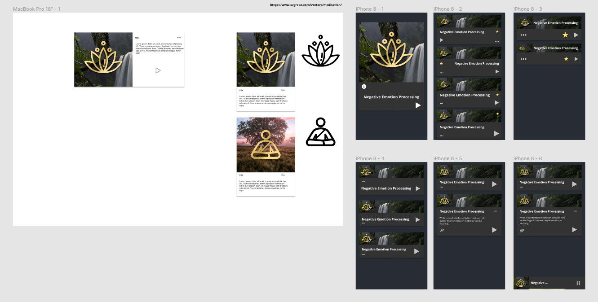

Meditation React App (WIP)
Background
I wanted to create a compelling React app for my portfolio, while at the same time ceating something useful for me. I have built a habit of daily meditation, and I especially enjoy guided meditations, but my favorite guided meditations are Youtube, which is a distracting platform, defeating the purpose of meditation. This project aims to address this problem by providing an easy to use and easy to update interface for playing back these guided meditations.
Exploration and Prototyping
When planning the meditation react app, I initially designed components for desktop. Soon I realized I would want to use this app on mobile, so I repurposed the initial design to work on mobile, and continued to iterate and refine this design until I was satisfied. The final design of the meditation card is the most important part of the app, and the mobile design ended up being functional on desktop as well. You can see my initial plan for hosting audio files rather than embedded Youtube videos in these designs
FigmaDevelopment and Result

The MVP of this project is now complete. The collection of videos is held in App.js, and passed as props down to MeditationCard components to render each video. Instead of hosting audio, I embedded Youtube videos to speed up development. The next step is to manage playback in state so no more than one video plays at a time.
Website Github